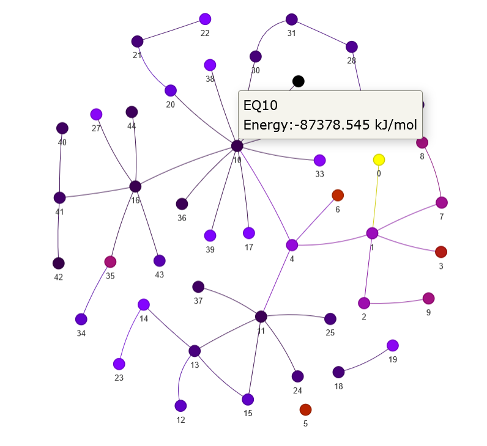
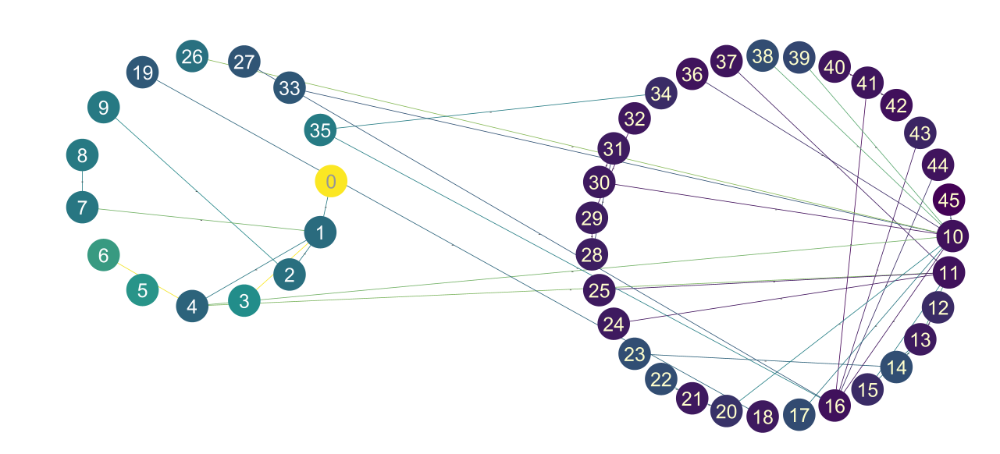

Networkモジュール
from grrmpy.network import NetGraph
net_g = NetGraph("XXX_EQ_list",
"XXX_TS_list",
"XXX_PT_list",
comfile="XXX.com",
poscar="POSCAR",
indices=[0,1,2,3,4,5,6,7,8,9,10])
net_g.write_html("Sample.html") # htmlに出力
net_g.write_graphml("Sample.graphml") # graphmlに出力
インタラクティブなグラフが作成される.
nodeにカーソルをホバーさせるとエネルギーが表示される.
エネルギーの大きさに従った色付けがされる.
write_htmlの結果
{kind=link}
write_graphで作成したgraphmlファイルをCytoscapeで表示
{kind=link}
- class grrmpy.network.network.NetGraph(*listlog, indices=None, comfile=None, poscar=None, calc_func=<function pfp_calculator>)[ソース]
Parameters:
- *listlog:
- 方法1: EQ_list.log,TS_list.log,,PT_list.logを与える.方法2: eq_list,ts_list,connectionsを与える.
- indices: list of int
- 原子のindex番号のリスト.同一構造をグループ化するために用いる.指定した原子同士の結合状態から同一構造かを判定する.
- comfile:
comfileパス
- poscar:
POSCARパス
- calc_func:
calculatorを返す関数
サンプル
>>> G = NetGraph("XXX_EQ_list","XXX_TS_list","XXX_PT_list",comfile="XXX.com",poscar="POSCAR",indices=[i for i in range(0:10)]) or >>> G = NetGraph("XXX_EQ_list","XXX_TS_list",comfile="XXX.com",poscar="POSCAR",indices=[i for i in range(0:10)]) or >>> G = NetGraph(eq_list,ts_list,connections,indices=[i for i in range(0:10)])
- get_graph(self_loop=False, cm='gnuplot', node=None, edge=None)[ソース]
NetWorkXのグラフを返す
Parameters:
- self_loop: bool
- 自己ループを含める場合True.
- cmstr
- "jet","hot"などmatplotlibで指定できるカラースケール.
- 戻り値
networkxのグラフ
- 戻り値の型
networkx.Graph
- write_html(html, height='500px', width='100%', cm='gnuplot', notebook=True, show_buttons=False, self_loop=False)[ソース]
htmlにグラフを作成する
Parameters:
- html: str
保存名.html
- height: str
縦幅
- width: str
横幅
- cm: str
- "jet","hot"などmatplotlibで指定できるカラースケール.デフォルトは"gnuplot".
- notebook: bool
- Trueした場合,Notebook上に表示される.(現在機能していない)
- show_buttons: bool
Trueにした場合,全ての機能を搭載したボタンが作成される.
- self_loop: bool
自己ループを表示する場合はTrue.